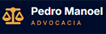
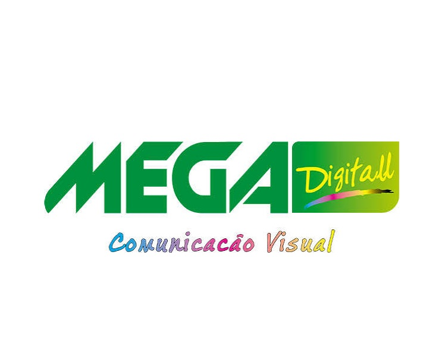
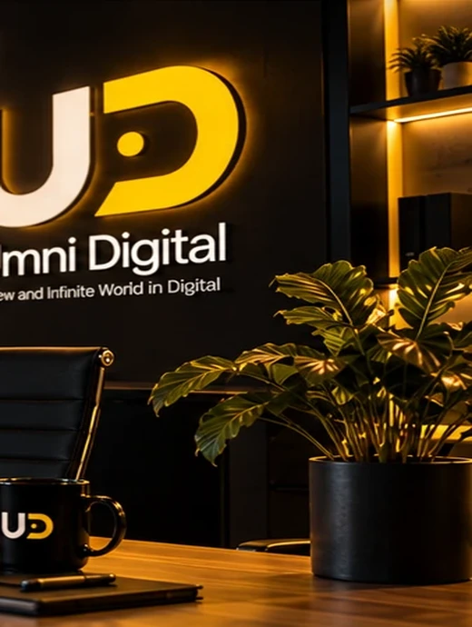
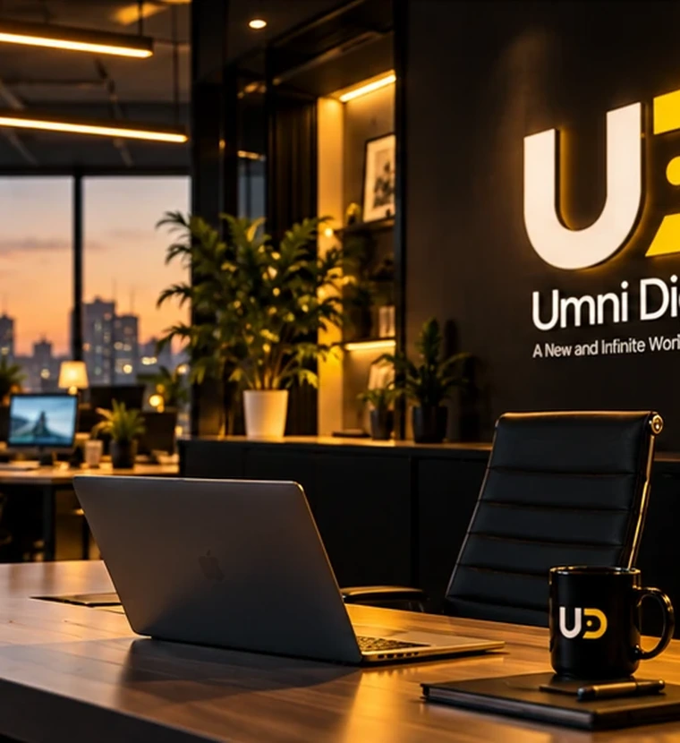
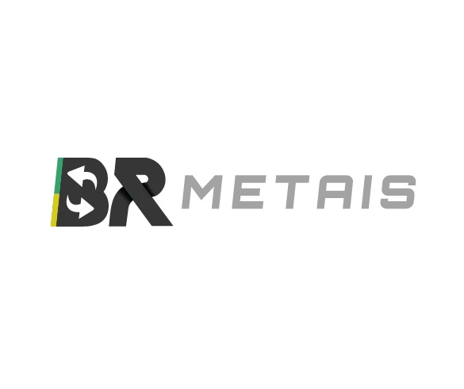

Gestão de Meta Ads
Anúncios no Instagram e Facebook para alcançar o público da sua região, com testes de criativos, remarketing e acompanhamento de conversões.
Curitiba e região metropolitana
A UMNI Digital conecta empresas de Curitiba e região metropolitana a novos clientes com Google Ads, Meta Ads, criativos e landing pages. Estratégia local para transformar cliques em oportunidades de venda.


Várias empresas confiam no nosso serviço, faça parte você também.
Serviços
Planejamos campanhas de Google Ads e Meta Ads conforme a área de atendimento do seu negócio. Unimos anúncios, criativos, vídeos, landing pages e análise de métricas para gerar contatos e acompanhar as oportunidades de venda.
Anúncios no Instagram e Facebook para alcançar o público da sua região, com testes de criativos, remarketing e acompanhamento de conversões.
Campanhas na Pesquisa do Google para alcançar quem procura seus produtos e serviços em Curitiba e nas cidades que sua empresa atende.
Peças visuais, copys, ângulos de oferta e variações para aumentar cliques, retenção e conversão.
Páginas rápidas, objetivas e mensuráveis para transformar visitantes em leads, orçamentos e vendas.
Vídeos curtos para tráfego direto, com gancho, ritmo, prova, oferta e chamada para ação pensados para conversão.
Soluções complementares de performance
Recursos adicionais para fortalecer a autoridade da marca e ampliar os resultados gerados pelas campanhas.
Estrutura e conteúdo para buscas sobre seus serviços em Curitiba e região.
Informações claras e respostas úteis para mecanismos de busca e assistentes de IA.
Organização da presença local da empresa na Pesquisa Google e no Maps.
Sobre a UMNI
Com base em Curitiba, a UMNI Digital atende negócios da capital e da região metropolitana. Campanha boa não nasce no gerenciador de anúncios. Nasce ao entender oferta, público, margem, atendimento e funil. A UMNI trabalha com estratégia, execução e leitura de dados para crescer sem achismo.

Método
A UMNI começa entendendo oferta, público, margem e caminho até a venda. Depois, define canais, verba, criativos e páginas com uma rotina simples: testar, medir, cortar desperdício e reforçar o que gera oportunidade real.
Mapeamos oferta, mercado, funil e gargalos.
Definimos canais, verba, campanha e metas.
Criamos anúncios com promessa clara e visual forte.
Lemos dados e ajustamos para vender melhor.

Time e execução
Você fala com quem pensa e executa. Nada de campanha largada ou relatório bonito sem ação. O objetivo é simples: gerar oportunidades reais para o seu comercial.
Começar conversaDepoimentos

"Antes da parceria com UMNI Digital, nossos leads dependiam só de indicações e do fluxo local. Não tínhamos presença digital e nem éramos encontrados por grandes empresas. O trabalho de posicionamento na internet mudou o jogo: hoje recebemos orçamentos de compradores e fornecedores qualificados de várias partes do Paraná. Foi o salto que faltava para profissionalizar e expandir nosso pátio."
"Minha advocacia era 100% dependente do 'boca a boca' e eu não tinha presença nenhuma na internet. A UMNI Digital construiu meu posicionamento digital do zero, com a seriedade e ética que o meio jurídico exige. Hoje, nosso escritório recebe contatos diários de clientes qualificados. Foi o divisor de águas para a expansão do meu negócio."

"Nossa empresa atendia regionalmente, mas faltava volume e constância de clientes. Quando iniciamos a gestão de tráfego pago no Google e Meta Ads, os resultados foram imediatos. Passamos a aparecer exatamente para quem busca serviços de comunicação visual na hora da necessidade. O volume de orçamentos diários no WhatsApp explodiu e conseguimos fechar projetos de maior ticket. Hoje, o tráfego pago é o motor de vendas do nosso negócio."
Blog
Perguntas frequentes
A UMNI Digital é uma agência de tráfego pago e marketing digital em Curitiba. Trabalha com Google Ads, Meta Ads, criativos, edição de vídeos para anúncios, landing pages, SEO local e organização de conteúdo para mecanismos de busca e assistentes de IA.
Sim. O atendimento inclui Curitiba e a região metropolitana, como São José dos Pinhais, Colombo, Pinhais, Araucária, Fazenda Rio Grande, Almirante Tamandaré e Campo Largo. A estratégia considera as cidades e áreas em que cada cliente atende. Também há atendimento online para empresas de outras regiões.
O tráfego pago permite anunciar para pessoas na área atendida pela empresa. No Google, os anúncios podem alcançar quem procura um serviço; no Instagram e no Facebook, podem apresentar a oferta ao público da região. A avaliação considera contatos, orçamentos, vendas e custo de aquisição.
Depende da oferta e do comportamento do cliente. Google Ads pode atender buscas por um produto ou serviço. Meta Ads permite apresentar ofertas por meio de imagens e vídeos no Instagram e no Facebook. O diagnóstico ajuda a definir o canal ou a combinação adequada ao negócio.
O valor depende dos canais, da quantidade de campanhas, dos criativos e das páginas necessárias. A proposta deve informar separadamente o serviço de gestão e a verba paga às plataformas de anúncios. Solicite uma análise para receber um orçamento adequado à sua empresa.
SEO melhora a estrutura e o conteúdo do site para buscas. GEO organiza informações para facilitar sua compreensão por mecanismos generativos de IA. AEO prioriza respostas diretas às dúvidas do público. As três frentes se apoiam em conteúdo útil, dados consistentes e páginas acessíveis; nenhuma garante posições ou citações.
Algumas campanhas podem direcionar as pessoas para o WhatsApp ou um formulário da plataforma. Uma landing page pode ajudar a explicar o serviço e medir as conversões. A escolha depende do objetivo da campanha, da oferta e da capacidade de atendimento da empresa.
Use o botão Solicitar análise ou fale no WhatsApp (41) 3262-5872. Informe o serviço que oferece, a cidade de atendimento e o principal desafio. A UMNI Digital usa essas informações para orientar os próximos passos e o escopo da proposta.
Análise gratuita
Preencha os dados e receba um direcionamento inicial para suas campanhas.